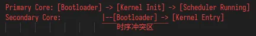
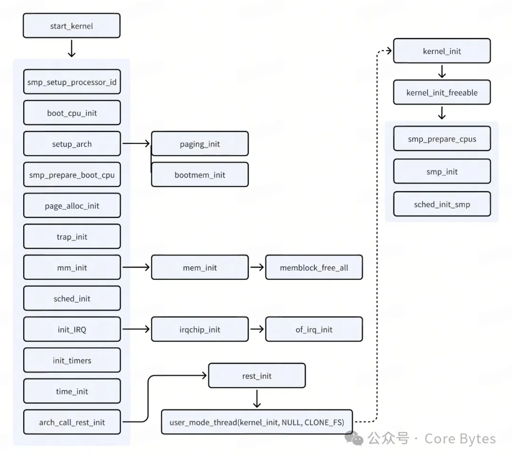
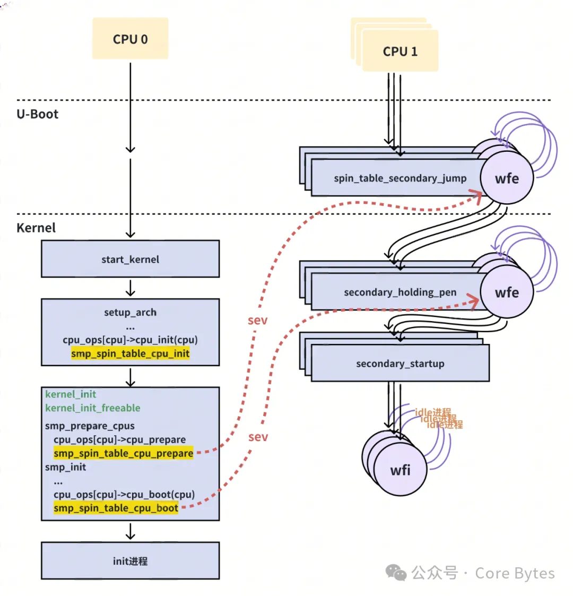

SMP 基础概念
SMP**（Symmetric Multiprocessing）** 指多个处理器核心在单一操作系统中以对等方式协同工作的架构模式。在 ARM64 体系下，这意味着所有 CPU 核心共享统一的内存空间，且由内核调度器动态分配任务。理解这种对称性至关重要 —— 它决定了多核启动流程必须解决的核心问题：如何让从核（Secondary Cores）在正确的时间、以正确的状态加入已运行主核（Primary Core）的系统环境。
发展与历史
在ARM架构的发展历程中，SMP（对称多处理器）启动机制的设计与硬件演进、行业需求紧密交织。早期ARM多核处理器（如Cortex-A9/A15）因缺乏统一的电源管理标准，催生了spin-table这种过渡性方案。其设计思路源于ARMv7时代”硬件简化、软件复杂”的哲学，通过在共享内存中设置轮询标志位实现主从核同步。这种方式无需专用硬件支持，2010年前后广泛用于树莓派3等嵌入式设备，但也因持续轮询导致功耗浪费（典型场景增加5-10%功耗），且无法适应地址空间扩展和安全隔离需求。
随着2013年异构计算（big.LITTLE架构）和虚拟化技术的兴起，硬件复杂度的提升倒逼标准化进程。ARM公司为此推出PSCI（Power State Coordination Interface），将其作为ARMv8架构的核心组件。该标准通过TrustZone安全环境下的固件抽象层，将核间唤醒、电源状态管理等操作封装为标准的SMC（安全监控调用）指令，既解决了不同芯片厂商的接口碎片化问题，又支持动态拓扑调整和核间中断唤醒。这种设计显著降低了系统功耗（据ARM白皮书数据，空闲状态功耗可降低22%），同时为Linux内核实现CPU热插拔、NUMA架构支持铺平了道路。
技术选择的关键在于硬件代际和系统需求。早期ARMv7/ARMv8芯片因物理设计限制多采用spin-table，例如NXP LS1043A工业控制器至今仍沿用该方案以确保微秒级确定性的启动时序。而现代移动平台（如骁龙8系列）和服务器芯片（如Neoverse V2）则强制依赖PSCI，这不仅满足Android 7.0后系统对异构调度和能效优化的强制要求，还与ACPI电源管理标准深度整合，使得同一份UEFI固件可同时引导Linux和Windows系统。值得关注的是，尽管Linux内核自4.14版本开始逐步弃用spin-table（仍保留为兼容选项），但在实时操作系统（如Zephyr）和航空航天领域，其无中断延迟的特性仍具不可替代性。
当前行业已形成清晰的迁移路径：PSCI 2.0规范新增了异步唤醒和错误核隔离功能，与RAS（可靠性可用性可服务性）特性协同工作，逐步覆盖从边缘计算到数据中心的完整场景。而spin-table作为技术演进中的阶段性方案，其历史价值在于为早期ARM生态提供了低成本的多核启动实现，这种”软件先行”的思路至今仍在RISC-V等新兴架构的SMP实现中可见其影响痕迹。开发者如今通过设备树的enable-method字段即可透明切换两种模式，这种兼容性设计恰是ARM生态从碎片走向标准化的缩影。
多核启动的关键挑战
1. 核间同步困境
当主核完成内核初始化时，从核可能仍处于复位状态或执行 Bootloader 代码。这需要设计精确的唤醒协议，例如：
- 基于内存屏障的 spin-table 机制
- 依托固件的 PSCI 标准唤醒
- 硬件辅助的核间中断 (IPI) 触发
2. 启动顺序依赖性
下图展示了典型的多核启动时序冲突：

若从核在内核未完成关键资源初始化（如页表、异常向量表）时启动，将导致不可预测的竞态条件。
3. 异构地址空间映射
主核在启动过程中会逐步开启 MMU，而从核唤醒时可能面临：
- 物理地址与虚拟地址的转换不一致
- 不同 CPU 的页表同步机制
- 缓存一致性协议 (Cache Coherency) 的激活时机
4. 固件与内核的职责边界
以 PSCI 方案为例，ARM Trusted Firmware (ATF) 需处理：
- CPU 电源状态管理
- 安全与非安全世界的上下文切换
- 启动参数的合法性验证
而内核则负责准备 CPU 操作集和调度就绪状态。
本文分析基础
基于 Linux 6.1 内核的 ARM64 架构实现，我们聚焦以下前提：
- 单核启动已完成且稳定运行（
cpu0完成start_kernel初始化） - SoC 符合 ARM 启动协议（如 CPU 离线状态定义、设备树规范）
- 分析范围涵盖主流启动方案（spin-table/PSCI）
u-boot GitHub - u-boot/u-boot at v2025.01-rc4
ATF GitHub - ARM-software/arm-trusted-firmware at v2.12.0
定义cpu
在 SMP 架构的冷启动阶段，系统呈现一种特殊的 “单核工作态”—— 仅有引导处理器（Bootstrap Processor，简称 BP）处于执行状态，其余应用处理器（Application Processors，AP）则处于断电或复位状态。这种设计源于硬件资源的初始化顺序需求：BP 需要首先完成内存控制器初始化、设备树解析等关键操作，为后续多核协同工作建立基础环境。
（思考：为什么不能在上电时直接启动所有处理器？这涉及硬件资源竞争的问题 —— 若多个核心同时访问未初始化的 DRAM 控制器，可能导致总线死锁）
内核通过五个核心状态掩码（cpu_*_mask）来勾画处理器的生命周期，这些掩码在多核启动过程中扮演着状态路由器的角色。其中与冷启动强相关的三个关键掩码为：
- cpu_possible_mask在设备树解析阶段确立，表示物理存在的 CPU 集合。对于固定拓扑的嵌入式系统，该掩码在启动早期即被固化。
- cpu_present_mask反映当前可被操作系统识别的 CPU 集合。在支持 CPU 热插拔的系统中，该掩码会动态变化；而在本文讨论的 SMP 启动场景中，其内容与 cpu_possible_mask 始终一致。
- cpu_online_mask标志着已完成内核初始化的活跃 CPU 集合。BP 核在启动阶段通过
set_cpu_online()函数将每个完成初始化的 AP 核加入该掩码，调度器依据此掩码分配任务。
内核启动

在 ARM64 体系架构的启动序列中，setup_arch()作为架构相关初始化的入口点，在完成设备树解析、内存映射等基础工作后，将控制权移交至smp_prepare_cpus()。这个过渡标志着系统从单核运行态向多核就绪态的转变，其核心任务是为后续 AP 核启动建立硬件抽象层。
smp_prepare_cpus
作为 SMP 启动的 “硬件适配层”，该函数承担着三项关键使命：1
2
3
4
5
6
7
8
9
10
11
12
13
14
15
16
17
18
19
20
21
22
23
24
25
26
27
28
29
30
31
32
33
34
35
36
37
38
39
40// arch/arm64/kernel/smp.c
void __init smp_prepare_cpus(unsigned int max_cpus)
{
const struct cpu_operations *ops;
int err;
unsigned int cpu;
unsigned int this_cpu;
// 拓扑信息初始化
init_cpu_topology();
this_cpu = smp_processor_id();
store_cpu_topology(this_cpu);
// NUMA域构建
numa_store_cpu_info(this_cpu);
numa_add_cpu(this_cpu);
/*
* If UP is mandated by "nosmp" (which implies "maxcpus=0"), don't set
* secondary CPUs present.
*/
if (max_cpus == 0) // 处理nosmp启动模式
return;
/*
* Initialise the present map (which describes the set of CPUs
* actually populated at the present time) and release the
* secondaries from the bootloader.
*/
// AP核准备循环
for_each_possible_cpu(cpu) {
per_cpu(cpu_number, cpu) = cpu;
if (cpu == smp_processor_id())
continue;
ops = get_cpu_ops(cpu);
if (!ops)
continue;
err = ops->cpu_prepare(cpu);
if (err)
continue;
set_cpu_present(cpu, true);
numa_store_cpu_info(cpu);
}
}
1. 拓扑发现与建模
通过init_cpu_topology()解析设备树中的/cpus节点，构建包括 Socket/Cluster/Core 等层级的拓扑结构。该信息直接影响调度域划分和缓存一致性协议选择，例如：
- 共享 LLC 的核组成调度域
- 跨 Cluster 通信使用 CCI-400 总线协议
- 核心休眠状态根据拓扑层级递进
2. NUMA 域初始化
在 NUMA 架构中（ARM移动平台一般不使用），numa_store_cpu_info()将当前 BP 核注册到其所属的内存节点，为后续的zonelist生成提供基础。该操作确保在 AP 核唤醒前，内存分配策略已具备 NUMA 感知能力。
3. AP 核硬件预配置
循环遍历possible掩码中的每个候选 AP 核：
- 获取操作集：
get_cpu_ops()根据设备树enable-method字段返回 spin_table/psci 等具体实现 - 执行核级准备：如 spin_table 需配置 holding pen 地址，PSCI 需验证固件版本
- 更新 present 掩码：成功预配的核被标记为 present，纳入调度器管理范围
（注释：max_cpus 参数可被nr_cpus=启动选项覆盖，实现动态核数限制）
启动参数与核数控制
NR_CPUS作为编译期确定的硬限制，定义了内核支持的最大逻辑处理器数。其实际影响体现在：
- 内存占用：percpu 数据区、调度队列等结构体按 NR_CPUS 预分配
- 热插拔上限：运行时激活的 CPU 数不可超过 NR_CPUS
- 位图尺寸优化：cpumask 等结构体使用 BITS_TO_LONGS (NR_CPUS) 计算存储单元
但真正的运行时限制由setup_max_cpus变量控制，该值可通过启动参数maxcpus=动态调整。这种双层控制机制使得：
1 | # 允许后续热插拔至32核，但启动时仅激活4核 |
smp_init1
2
3
4
5
6
7
8
9
10
11
12
13
14
15
16
17// kernel/smp.c
/* Called by boot processor to activate the rest. */
void __init smp_init(void)
{
int num_nodes, num_cpus;
idle_threads_init();
cpuhp_threads_init();
pr_info("Bringing up secondary CPUs ...\n");
bringup_nonboot_cpus(setup_max_cpus);
num_nodes = num_online_nodes();
num_cpus = num_online_cpus();
pr_info("Brought up %d node%s, %d CPU%s\n",
num_nodes, (num_nodes > 1 ? "s" : ""),
num_cpus, (num_cpus > 1 ? "s" : ""));
/* Any cleanup work */
smp_cpus_done(setup_max_cpus);
}
smps_init 函数主要是由BP核（通常是 CPU0）调用，用于激活系统中其余的处理器（也就是除BP核之外的其他 CPU），并且在完成激活操作后进行一些相关的信息统计和清理工作，是 Linux 内核在多处理器（SMP）系统启动阶段的一个关键函数，协调多个 CPU 从初始状态进入到可正常参与系统运行的状态。
idle_threads_init();：
这个函数主要负责初始化每个 CPU 的空闲线程（idle thread）相关资源和状态。在多处理器系统中，当一个 CPU 暂时没有任务可执行时，就会运行空闲线程，空闲线程会进行一些诸如电源管理（让 CPU 进入低功耗状态等）、等待新任务到来等操作。该函数会为每个 CPU 创建合适的空闲线程环境，设置好其初始的执行上下文、栈空间等相关要素，确保各个 CPU 在空闲时有正确的行为逻辑，为整个系统的节能以及 CPU 空闲时的管理奠定基础。
cpuhp_threads_init();：
cpuhp_threads_init 函数会创建和配置这些用于 CPU 热插拔管理的线程，注册相应的回调函数等，使得内核具备处理 CPU 热插拔事件的能力，提高系统的灵活性和可扩展性。
bringup_nonboot_cpus(setup_max_cpus);：
bringup_nonboot_cpus 函数承担着激活非引导 CPU（也就是除了最先启动的那个 CPU 之外的其他 CPU）的重要任务，它接收 setup_max_cpus 作为参数，前面提到过 setup_max_cpus 定义了系统准备激活的最大 CPU 数量。将其纳入到内核的 CPU 管理体系中，以便后续能参与系统的任务调度等操作。
num_nodes = num_online_nodes();和num_cpus = num_online_cpus();：
num_online_nodes()函数获取目前在线节点的数量，让num_nodes反映当前系统中实际可正常使用的 NUMA 节点个数。num_online_cpus()函数获取目前在线的cpu数量，使num_cpus代表当前系统中真正能够运行任务的 CPU 数量。
smp_cpus_done(setup_max_cpus);：
在所有 CPU 激活以及相关统计信息输出之后，调用 smp_cpus_done 函数，该函数由具体的平台定义，进行一些后续的清理或者收尾工作。主要涉及到释放一些在 CPU 启动过程中临时占用的资源、完成一些和 CPU 启动相关的状态标记清理等操作，确保系统处于一个稳定且合理的状态，完成从 CPU 启动激活阶段到后续正常运行阶段的平稳过渡。
SMP启动方式
spin-table
在剖析自旋表唤醒机制时，我们首先关注处理器上电后的执行流向。所有物理核（BP 核与 AP 核）初始均由芯片内置的 ROM code 引导，该固化程序完成基础时钟和内存控制器的初始化后，BP 核与 AP 核开始出现执行路径分化。此时 BP 核按常规启动流程接管引导加载程序控制权，逐步向内核执行环境过渡；而 AP 核则陷入由引导加载程序预设的自旋等待区（以 U-Boot 的 spin_table_secondary_jump 函数为典型实现），其本质是通过轮询内存中特定地址的状态字来维持待机姿态。
1. U-Boot 流程（等待唤醒）
1 | // arch/arm/cpu/armv8/start.S |
在所有核上电后将执行到 U-Boot 的_start方法中检查AP核。这里的branch_if_master宏通过读取 MPIDR_EL1 寄存器中的 Affinity 字段，结合设备树中定义的 CPU 节点信息，精确识别当前执行的是启动核心（BP）还是从属核心（AP）。
当确认为 AP 核后，执行流将跳转到spin_table_secondary_jump段，这段代码构建了从核的等待逻辑：
1 | // arch/arm/cpu/armv8/spin_table_v8.S |
这段指令序列展现了 spin-table 机制的核心思想：AP 核通过wfe指令进入低功耗等待状态，其唤醒完全依赖 BP 核设置的spin_table_cpu_release_addr物理地址。当 BP 核完成必要的系统初始化（如内存控制器配置、页表建立等）后，会向该地址写入启动地址并触发sev指令广播事件。这种设计使得 AP 核的唤醒时机完全可控。
值得注意的是spin_table_cpu_release_addr在初始状态下为零值，这强制 AP 核必须等待 BP 核显式设置有效地址后才能继续执行。这种同步机制虽然保证了启动顺序，但也带来了潜在的启动延迟问题。当 AP 核检测到非零值时，br x0指令将执行流转移到 BP 核预设的启动代码，在那里继续执行后续初始化流程。
整个流程中硬件指令（如 wfe/sev）与软件约定的完美配合，展现了早期 ARM 多核启动设计的精妙之处。
释放地址的传递机制通过设备树完成。U-Boot 在启动阶段通过spin_table_update_dt()函数将spin_table_cpu_release_addr的物理地址注入设备树的cpu-release-addr属性：
1 | // arch/arm/cpu/armv8/spin_table.c |
2. 唤醒AP核
内核初始化阶段通过以下调用链获取spin_table_cpu_release_addr的物理地址：
1 | setup_arch //arch/arm64/kernel/setup.c |
具体实现中，smp_spin_table_cpu_init()从设备树解析出cpu-release-addr值，存储到cpu_release_addr[]（NR_CPUS个元素的数组）供后续使用：
1 | // arch/arm64/kernel/smp_spin_table.c |
调用路径如下：
1 | static int smp_spin_table_cpu_prepare(unsigned int cpu) |
在代码中， writeq_relaxed(pa_holding_pen, release_addr); 操作很关键，它将 secondary_holding_pen 的物理地址写入到AP核的释放地址处（由 release_addr 指向）。因为 secondary_holding_pen 原本是内核中的一个符号，对应的是虚拟地址，故这里需要转化为物理地址写到相应的释放地址位置，以此来向AP核传递启动相关的关键信息。
而下面的 sev(); 语句，其作用是唤醒处于等待状态（执行了 wfe 指令后的等待状态）的AP核，告诉它相关启动准备工作已就绪，可以继续后续的启动流程了。
我们再次回顾AP核睡眠等待相关情况：在汇编函数 spin_table_secondary_jump 中，AP核处于睡眠等待状态，被唤醒后会接着执行 wfe 指令之后的几行指令，会去判断 spin_table_cpu_release_addr 地址处的内容是否为0。而此时，由于BP核已经通过前面的操作往这个地址写入了有效的释放地址（也就是前面提到的 secondary_holding_pen 对应的物理地址相关信息），所以不会再跳回等待状态，而是会跳转到 secondary_holding_pen 处去执行后续代码。需要注意的是，这个 secondary_holding_pen 地址是物理地址，并且AP核在这个阶段还没有开启MMU，它还没有进入到虚拟地址的世界，依然是基于物理地址来执行相应指令的。
3. 进入内核空间（再次自旋）
一旦AP核获得了释放地址，它会直接基于这个物理地址进入到内核相关的执行流程中去执行后续指令，开始融入整个系统的运行，逐步完成自身的启动过程，进而参与到多处理器系统的协同工作之中。
1 | // arch/arm64/kernel/head.S |
但是从代码来看这个发展与预想的有点不同，这里又加了个循环。首先他获取了当前 CPU 的唯一标识，以便区分不同的 CPU 个体，后续依靠这个标识来判断是否是当前 CPU 可以启动。
然后获取 secondary_holding_pen_release 变量的值和当前 CPU 的标识（x2 寄存器的值）进行比较。如果二者相等，意味着当前 CPU 满足了启动条件，就会跳转到 secondary_startup 处去执行后续的启动流程，开始正式的初始化等操作。
要是比较结果不相等，说明当前 CPU 还没达到启动条件，此时就会执行 wfe 指令，让 CPU 进入等待状态。之后跳回 pen 标签处，继续循环检查启动条件，也就是再次读取内存地址的值并和当前 CPU 标识进行比较，如此反复，直到满足启动条件才会跳出这个循环去执行后续的启动流程，使得多个AP核能有序地等待并在合适时机进入初始化及参与系统运行的阶段。
4. 最终启动AP核
那么secondary_holding_pen_release何时会设置呢？答案是最终要启动AP核的时候。
调用路径如下：
1 | start_kernel |
1 |
|
1 | // arch/arm64/kernel/smp_spin_table.c |
这里将AP核标识写到了secondary_holding_pen_release中，然后唤醒AP核，对应进入到secondary_startup，来做AP核的初始化工作（如设置ｍｍｕ，异常向量表等），最终进入自己的idle任务。
小结

spin-table方式的SMP启动方式，从名字也可以看出他是通过让AP核处于自旋的等待，直至BP核在适当的时机将其唤醒，之后共同由内核调度。下面将简单总结下其主要的流程：
BP核、AP核在上电后都开始工作，BP核负责完成整个系统的引导和初始化，并创建起多个进程；AP核一般运行到bootloader后进入自旋（wfe睡眠），等待被BP核唤醒；
BP核进入内核后会通过smp_spin_table_cpu_prepare方法设置AP核的释放地址为secondary_holding_pen这个内核函数，并通过sev指令唤醒AP核；
AP核跳转到secondary_holding_pen开始执行（进入内核世界），接着等待secondary_holding_pen_release变量与该CPU标识一致，否则进入自旋（wfe睡眠）；
BP核将基础的内核组件都初始化之后，调用smp_init开始真正启动AP核，通过smp_spin_table_cpu_boot方法将待启动的AP核CPU标识写入secondary_holding_pen_release中，并通过sev指令唤醒AP核；
AP核接着进入secondary_startup执行（设置自己异常向量表，初始化mmu等），最终在idle线程中执行wfi睡眠；（所有的AP核操作相同）
BP核继续执行初始化流程，直到启动init进程，而被启动的AP核都可以调度进程以及均衡负载；
下一篇《Linux SMP启动罗曼史（下）：PSCI的安全唤醒与TrustZone的密室协约》，我们将继续介绍向 PSCI 的演进。
This is copyright.